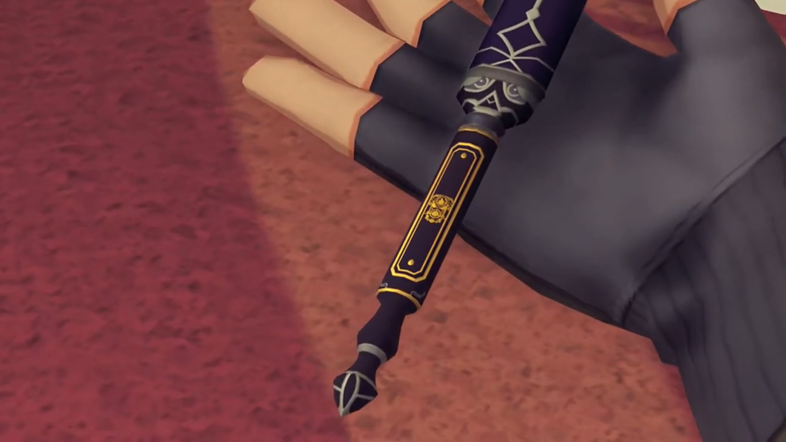
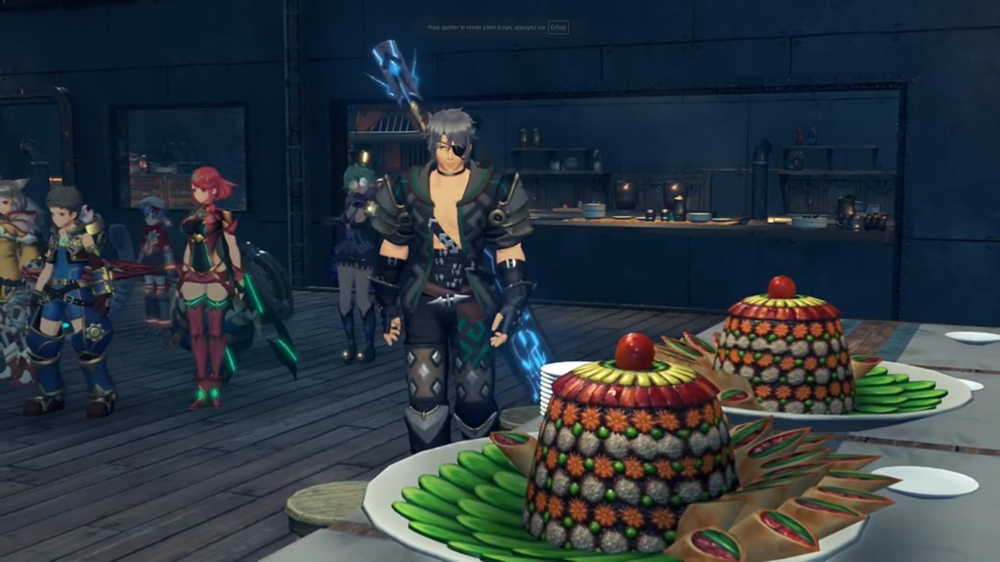
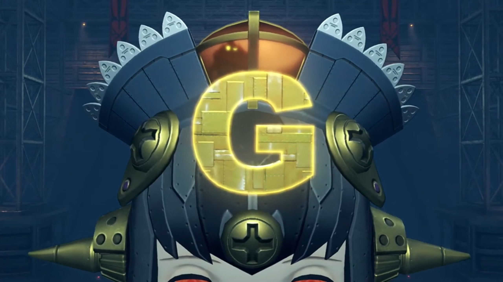
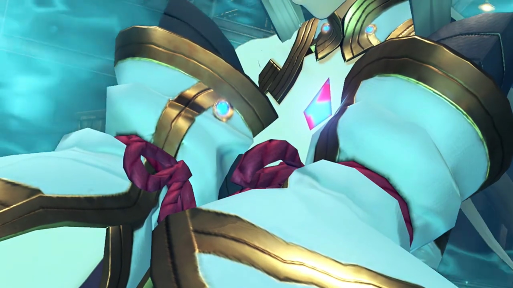

Ancestors of Tantal, Bana's Plot, Emperor Niall's Selflessness
The group gathered in one of their room, Zeke briefing them, "We can reach Tantal by ship, but once there we'll need to do a spot of walking."
Nia was impressed, "So we're traveling with Shellhead here? Neeeever thought I'd see the day..."
"I think you'll find I make a fantastic ally."
Tora don't think so, "Mmmm Luck of Zeke not so great. Bet we shipwrecked by tomorrow."
"AHAHAHAHAH!!! Cheeky furball!!"
Nia agreed, commented lamely, "We're all- gonna die."
Rex got a question, "Hey, Zeke... You said before that- Torna- concerned you too... What did you mean by that?"
"Whuh? Oh, yeah, that. I don't know about those clowns, but Torna, the country that fell 500 years ago; they were the ancestors of us Tantalese. The people of Tantal- are descended from Addam, the hero of Torna- who escaped its destruction."
"So... After Pyra fell asleep, Addam escaped to Tantal?"
"That's right!" He concluded without a second thought.
Dromarch commented, "That is the first I've heard of it. I have studied much history, but this story never featured. Most- peculiar."
"We're humble. Don't really like to brag about it." He brought out something that looked like a brush for Chinese Calligraphy, explained, "The only real trace left is in this here -- sigil of the royal family..."

Mythra's eyes squeezed as she saw that once again, so similar, but there's something weird about it. It... only looks similar, but not the same as she recalled. Is it because they're descendants, so they make amendments to it? Or is it... Her thoughts flew back to earlier in the day, after the meeting, when she was with Amalthus alone,
So, why did you awaken Haze?"
"Because her power was of great use to me. Indol has found itself... under attack from Torna a number of times. She was necessary... in driving them back."
"Really? Then why don't you seem to have any others? Blades, that is."
"Heh... Driver though I may be, I am no fighter. Besides, I find the warrior monks here so reliable. They get the job done."
"Hmph! If you say so... I wonder, do you know why Torna are using the name of a dead country?"
"Jin... was a Blade of Torna, once. Loyalty or nostalgia, who can say? Perhaps both."
"Is that really all there is to it?" All sounded like common sense, but common sense usually being common nonsense, she can't believe the story is as simple as it is. Too good to be true, and it usually is.
"You don't think so?"
"I don't know much about what happened... while I slept. There are no written records- either. All we have is... stories- passed down."
"And you think that is insufficient? History... is a murky thing. Only those present... can truly know what took place."
"But weren't you one of those present?"
"And that is why... I offer you my cooperation."
Mythra don't believe what the liar said, expected that "I guess we'll find out, if we go- to Tantal..."
Without Mòrag and Brighid, the group stood at the center of the square where the ship parked just up ahead. Bazaars and stalls sell goods to people, but mostly, the visiting soldiers flooded the market with demands.
Nia felt, "Hmm... Tensions seem high."
Dromarch shared, "From what I gather, it seems an official summit is to be held- between Mor Ardain and Uraya."
"A summit? You mean, about the recent punch-up? But I thought..."
Rex don't understand too, "Didn't Praetor Amalthus- get them to stop- and sort it all out?"
"Perhaps there are some discussions they would prefer Indol not to be privy to."
Zeke added, "Besides, Uraya doesn't like to associate too closely with Indol. They'd hate to be seen as acquiescing to the Praetor's will. Gotta keep up appearances, you know?"
Nia wondered what that word means, "Ac...quiescing? You what?"
He explained, "Like, letting him tell 'em what's what."
She teased, "Hah! For such a spanner you sure use some big words. How come?"
"Stop calling me that! BUZZ OFF, kitty-no-mates! Anyway, this summit would explain why Mòrag isn't around..."
Dromarch: "Indeed. She has much to attend to."
Her brother had much to discuss with her. "Shared sovereignty over- Gormott?"
"Yes. I don't think anything less will be sufficient to placate them."
"The Senate would never approve it..."
"I can overrule them by decree. Of course, I would need to secure Senator Roderich's cooperation."
"Imperial decree? If it's come to that... Well then, I cannot dissent. I cannot help but admire your courage, Your Majesty." She bowed to him.
His eyes widened, "That means a lot, coming from you."
Just then, someone was knocking on the metallic door. The door opened and "Acting Chairman Niranira" ran in.
He immediately went directly to the point. "Sorry for intrude. Is emergency, so Niranira take liberty of drop by- unannounced..."
Niall excused him of the trouble, saw that "You certainly look troubled, Chairman. So, what is this emergency you speak of?"
"Well..."
The group hadn't moved an inch from where they stood at the square. Zeke supposed, "So, we can make our way to Tantal from here. I assume the Praetor- has a ship waiting for us."
"Hey, Shellhead!"
"What?"
"Are we really gonna just leave Mòrag behind?"
"WHO'S LEAVIN' ANYONE? She's got her own priorities, y'know."
"Y-yeah, but still..."
Gramps concluded, "Anyway, her schedule is filled with official duties right now."
Rex understood that "For sure. It's just a bit of a shame, is all. You know, since we came all this way together."
Zeke: "I guess I know how you feel, chum." Then, something caught the edge of his eyes, he turned to it in a surprise, "Uh? Speak of the devil..." Mòrag and Brighid were coming towards them from aboard the ship.
After she relayed info she heard from Niranira, Rex exclaimed, "Bana's going for the summit?"
Gramps was shocked too, "On top of everything, an assassination attempt?"
Brighid asserted, "If blood gets spilled at the summit, it'll mean war."
Zeke: "War's good for business, after all. I guess he wants to use that- to get himself back in- with the Guild..."
Rex felt betrayed, "Why, that little... I was wondering where he'd slunk off to! What a sneaky git..."
Mòrag: "It seems Acting Chairman Niranira... wishes to take care of this incident covertly, to avoid it reflecting badly upon the Guild."
"So you came to us?"
"If we mobilize the army, the whole thing will become public."
Nia wasn't very happy hearing that, "Ohhhhh I get it. So we're a more- convenient solution."
"I'm not forcing you. If you refuse, Brighid and I will do what we can- alone."
Zeke can't stand her, "AH, COME OFF IT, LADY! You wouldn't even think of dragging us into this, if you thought you could handle it on your own."
"I suppose not... You know Bana as well as I. There's no telling what he might be plotting."
Brighid added, "According to Acting Chairman Niranira, several giant weapons were being built at the factory where we last saw him. And one of them... is currently unaccounted for."
Tora: "Giant... weapons..." The only giant weapon they last saw and fought is Rosa, he recalled.
Rex blandly spoke, "Got it. Besides, you know, we've got our own score to settle with him."
Mòrag expressed, "Thank you. It will be easier to focus on my duties knowing you are on the case. Good luck."
"Leave it to us."
The group entered the Mor Ardain ship, which the summit was expected to be held. In a hanger just past the entrance, they passed by without noticing a giant crate perhaps 3 meters tall. In fact, not even the soldiers that patrolled the place felt it unusual. The box started rattling without attracting attention.
The diner, Tirkin chefs laid the foods they prepared on the table. Plates after plates, they'd a lot of people to serve later. Rex recalled what the Tirkins have business with Bana at the factory, immediately came to conclusion and called for a halt, "Stop everything! Hold it!"
The tirkins gathered around, and one representative asked, "Craa!!! Wh-wh-wh-wh-what? Wh-wh-wh-wh-who's you?"
"Don't. Play. Dumb!" He looked to the foods, immediately accused them, "POISON! THAT FOOD IS POISONED!"
"P-p-p-p-poison? You kids krazy in brains!"
Zeke: "We're past talking! QUICK, GRAB 'EM!!!"
"YAAHHHH!!!" And the fighting started.
All the tirkins fell to the floor. Someone called out, "Pleaaaaaase wait."
Rex recognized, "Pupunin?! What are you doing here?"
"What silly question! It Pupunin who hire world-famous band of gourmet chefs, Fire Dragons!"
"World... Famous?" Rex scratched his head. If they're so famous, why hadn't he heard of them?
Neither did Nia, "...gourmet chefs?"
Pupunin explained, "Mor Ardain veeeeeery insistent, want only veeeeery best food for important summit! Pupunin work wings to bone finding chefs... and now what this?!"
Rex: "Uh... So you mean..."
Pyra: "...these guys are..."
Nia finished, "...just a bunch of cooks?"
Dromarch recalled, "I did think- they were not putting up much of a fight."
Pandora: "Then this food is actually..."
Zeke went forward to taste one of the gorgeous looking plates. Cucumber and spring rolls lined the brightly colored cake, layers upon layers, with cherry toppings. HIs eyebrows raised as he stuffed one into his mouth, closed his eyes to enhance his taste buds. Electricity struck his brain, and he felt he'd been raised to heaven, "D-D-D-DEEEEEEE-LICIOUS!!! I COULD EAT THIS STUFF FOREVER!!!"

Pupunin wanted to know, with fluttering wings, "What friend doing?! Very expensive food now go to waste!"
Rex apologized with most guilt, "SORRY!!! We really did think they were here to murder someone..."
"Murder? What this nonsense friends talk?! I demand compensation. Friends have no idea how much time and money Pupunin spent on this..."
An explosion pulled their attention away from him. They braced for impact while assessing their situation, "An explostion?!"
Zeke had forgotten his culinary delicacy heaven almost immediately, "Huh? From where?!"
Soldiers were mobilized; they stopped one of them and asked, "Hey! What's going on?"
The soldier shouted to them, "Explosion in the hangar! Right when everyone was busy with Queen Raqura's arrival!!! It's really bad!!!" He immediately dashed off to the location.
Rex: "The Queen is here? This is it!"
Pyra urged, "Rex, we need to hurry!"
"Yeah!"
They had forgotten about the poor Pupunin, "Hey! Heyheyhey, wait!" But there was no one to deal with him right now. "Heyyyy!!! No running away!!! COM-PEN-SA-TIOOOOOOONNNNN!!!"
The group found Giga Rosa at the hanger. The two sidekicks of the Queen were protecting her. The Queen asked Giga Rosa, "Who are you, villain?! Is this some underhanded Ardainian trick?!"
Bana was yet again docked on the head of Giga Rosa, relayed via his speaker, "WRONG! But also right! Truth is complicated! ANYHOW, HERE- is where Queen die. IF IT LOOK LIKE QUEEN KILLED BY MOR ARDAIN, ME IN THE MONEY AGAIN!!!"
The Queen recognized "That voice... Bana, from the Argentum Guild."
"CORRRRRECT!!! TOP MARKS for the Queen!"
"But you were unseated as Chairman."
"Is not so eaaaaasy to get riiiiid of Bana! TRADE GUILD of Argentum BELONG to Bana! Down to last SCREEEEEW, last drop of OIIIIIILLLL!!!"
"Grrr...."
"Hold it, Bana!" Rex arrived just in time.
"YOU!!! REEEEEEEX!!! Meeeeeh! BANA not let Rex interfere with plans! AGAIN AND AGAIN! BANA NOT STAND FOR THIS!!!!"
"Masterpon! That Artificial Blade!"
"It Rosa?! Meh-meh-meh... Tora feel much greater power than before..." In front of the docking port was a large golden G. "Especially from mark on forehead!"

"What's going on?" Niall, Aegaeon, Mòrag, and Brighid just arrived. Niall panicked, "Wh-what's that?!"
Bana: "Oho-ho-ho!!! EVEN EMPEROR come straight to Bana! CONVENIENT little moth to flame!"
Nia urged, "Come on, Bana. Cut the bad guy talk and accept you've lost. You know you won't get away with it, what with all these wit-nesses here!"
"IF Bana simply kill everyone, then nobody BLAB!!! Victory of Bana is ASSURED!!!"
Rex and the others took out their weapons, he replied, "You know- we can't let you do that!"
"Huhuhuhuhuhuhuhuh! You think you handle the pooooooower of upgraaaaaaded Giga Rosa?! Things go veeeeeeery diffeeeeeerent this time!"
The surface of Giga Rosa sparkled with electricity. The docking port once again detached from its head. Bana, in full disbelief, climbed out of the controller's room, "How... Even Giga Rosa defeated by these nasty meddling kids..."
Mòrag walked forward, announced that "This ends here, Bana. You are under arrest. The Praetorium will handle the judgment. Assassination is a serious matter. Your sentence will be harsh."
The Queen decided to observe who wanted to kill her closer up, "So the mercantile genius Bana... meets an inglorious end before my very eyes. Pitiful."
How could he, Bana, lose like this? No, no way will this be his end. "Grrr... Bana is..."
"Hm?" What had this wretched rat had to say, wondered Mòrag.
"Bana, is not kind of man to go down like this!" He revealed a remote control with only a big red button, imprinted with a G on it.
"Ah!" The group braced for impact.
"If I go down, I take YOU- with me!" He brought it up high, ready to press the button.
"Watch out!" Blood rushed into Niall's brain; he subconsciously dashed past Mòrag and the Queen, reaching for Bana. "Aegaeon!"
"As you wish! Huuuuuhhh!!" With full might, a shield raised to defend everyone. Niall was within but not Bana. Niall exited the shield in the raising eyebrows of Mòrag, to reach for Bana; but it was too late. Had he been one step closer, he would have snatched the control before Bana pressed it. The ether furnace of Giga Rosa self-detonated. Bright light blinds the eyes of all, restricted any further actions for a second. The light dimmed with the loss of the shield.
The Queen was awestruck, partly from a close call to death's door, partly from his actions. "(pant pant pant) Niall Ardanach... You... You sought to... protect us?"
He turned around with a thin smile, "I'm... glad..." they were all right. Darkness engulfed him, and he dropped unconscious.
The world dimmed as he occupied her whole vision. She brought him up, wrapped him in her arms, screamed, "Majesty! MAJESTYYYY!!!" She scanned his body; dark blood dripped through burned clothes. Severe burn injured large part of his torso and limbs. It was well beyond saving, she thought, of the imperial capital's medical technology. "Your Majesty! Please, no!"
Aegaeon sighed, "Your Majesty... I have... failed you..." And he returned to his core. Only a Driver's death can a Blade return to its core{{footnote: The other way round, the Blade returning to its core but the driver don't, in the case of Torna Drivers, isn't possible here because Aegaeon don't stand in front of Niall, hence damaging his core but not his Driver.}}, Mòrag was sure about it.
All hope had lost. "I... it can't be... To protect us, you... Please, wake up! Niall!" The others don't know how to react nor consoled her who'd just lost her brother, "NIALLLLL!!!"
"Mòrag..."
Nia's heart raced once more. The last time she could've fight and Vandham could be save, but she didn't. Had not Mythra been awakened, they'd been roasted now. And now, again, she shall fail her teammates, because of a deep underlying fear? No, she's not going to let that happen again. Not with the escalating guilt that'll live within her forever if she can do something but don't. "Dromarch."
"Yes?"
"Distract the others..."
"Distract? I'm not sure I..." Then, it struck him what she wanted to do, "N-no! My Lady, you cannot-!"
"There's still time... Hurry!"
Not that he could deny the will of his Driver. "Yes, my lady!" He went by the door and shouted, "There are more of them!"
Mòrag was doused with desolation when, like a match thrown into a gallon of oil, her desolation ignited, to destroy every last one of 'em, "Where?"
Zeke was so confused, "What'd you say?!"
Without further adieu, he lead, "This way! The rest of you should get to safety!"
"CHUM!!"
Rex agreed, "I'm on it!" These bunch are gonna pay for what they'd done to Niall. The Queen was still recovering from the selfless actions coming from her enemy state. Would he not have benefited if she dies here? But he'd chosen otherwise, to risked himself for them. She left the room, with her bodyguards, without a word. But his actions speaks more than any advantage to negotiate if the summit had been held.
Mòrag struggled to leave her brother alone; his blood felt cold, his body gradually losing warmth. Logic and emotions raced, to stay by his side, or kill every wretched rats that caused his brother's harm. Her logic finally overtook her emotions, as she softly put him down, dashed past Nia as if she didn't see her, and went after Dromarch and the others.
Nobody else except them, she could put down her resistance, went up and took him by her hands. Green healing ether released from her hands; she changed her clothing and makeups and whatnots, casting it at full strength. Life overflowed his body yet again, awakening his consciousness. He effetely turned to look at her, wondered, "You- are..."
"Shhh... You're gonna be fine..."

Zeke was especially not happy with Dromarch leading them up and down empty alleyways, accused him, "What d'you mean, imagined it?! You got us alllll in a proper tizzy!"
He stopped just behind the door entering the hanger, "My apologies... I thought I spied silhouettes... I did not mean to cause trouble." Mòrag was too deeply occupied, now that the enemies were all eradicated, by the loss of whom she'd grew up with, whom she cared and loved most. She fell into a silent depression.
It was Nia's shout that temporarily distracted her, "Heeeeeyyyyy!!!"
"Huh?"
She waved incessantly at them. "Heeeeeyyyy!!! You guys! His Majesty the Emperor is awake!" Niall still felt his heart hurt, his injuries were mostly healed, but there still was some small ones to patch up. He tried to stand up, supported by Nia.
"What?!" Mòrag eyes immediately fixated on the figure. Yes, he's moving, he really is moving!
"Can it be...?!" Brighid don't know what happened. Quickly, they dashed to his side; Mòrag took no questions, brought him within her arms, and squeezed tight. Yes, it's him all right. The warmth returned to him, oh dear, oh my God.
"Majesty?!"
"I apologize... for making you worry..."
"Majesty... It's... It's a miracle..."
Brighid shared, "When Aegaeon returned to his core, I was certain we had lost you..."
Nia mocked, "Honestly... you call yourselves soldiers?! First aid? Anyone heard of it?"
Mòrag rebutted, "But... his wounds..."
"Hmph! Just scratches!" Nia replied, as if it was something easy. "Pfft. Nothing me... and Dromarch- can't handle."
"You save..."
"Hmhmm!" The pride, yes, the pride!
"Thank you, Nia. I truly don't know how to... I will never be able to repay you, for what you..." Relieved. Gratitude. Grateful.
"Oh, don't sweat it. Let's just say you owe me one. That'll do fine, right?"
"Nia..."
Mòrag found him standing alone in his palace, so lonely. Aegaeon used to be by his side, accompanying him; but now, there was nobody left. The room was big, but it felt so empty. "You shouldn't be up. It's only been one day... Please don't strain yourself."
His lips went up a little; nice to have someone sincerely caring for him. He urged at the table, tried to laugh off all the hard work in life, "Half a day off, and look at all this- paperwork! I sweeear, it's like they don't want me to sleep at all!"
"Majesty..." But your health is more important...
He suddenly spoke seriously, "Special Inquisitor. I hereby issue you new orders. It is my wish- that you travel with the Aegis- as an emissary of the Empire. Guard her- and defend her against her enemies until she reaches Tantal."
"Guard... the Aegis?"
"I've already discussed it with His Eminence."
"Forgive me. Your Majesty, I cannot accept." Not while you need someone by your side. Not after Aegaeon had returned to his core. "Just think about what happened yesterday! It would be sheer foolishness for me to leave your side!"
"Is that so?" He questioned her assumptions.
"Huh?"
"I can see it in your eyes. It's clear that the Aegis... or rather, that boy, has made a great impression on you."
She tried to deny, or rather, she permit herself not, "That's not... I am your... Special Inquisitor. Ensuring Your Majesty's safety is my only concern. To abandon that duty and go traveling..."
He looked away at the table. Sensing his lost of attention, she followed glance, and only then did she saw the unlit crystal put beside the paperwork. "Is this... Aegaeon's?"
"A Driver who cannot even protect himself is no Driver at all. Yesterday's events... have made me... keenly aware- that I have no aptitude for it. It'll be of more use in your hands." He made up his mind.
"Majesty..." Then who's gonna protect you?
"The world- is changing, Mòrag. I trust you more than anyone- to lend that boy the wisdom and strength he will need."
"Urgh hurrrh..." She can't deny that.
"I miss it, you know. Lake Yewtle, in Gormott." He closed his eyes, as if traveled back into the past. The cool weather, the slightly cold water, the breezes that rustled the leaves, the scent of the flora, cool and refreshing.
She was taken aback, "What?"
"Remember when the two of us would shake off the servants... and go swimming there?"
"Ahhh... Yes. Of course." How long was that ago?
"Kids from the nearby village would come too. Good times." Oh, how they won't treat him as a higher up but just as equals, friends, playmates. He missed it. Yet before he's even grown up, he had been seated on the throne. Not what he wanted but...
"Majesty..." She felt relief. He was all right; he didn't delve into depression; he is still he, the young boy a few years ago. Her clutch on him loosen.
"If Mor Ardain... No, the whole of Alrest, could be like that again... Wouldn't it be beautiful?"
"Is that my newwww... duty, then?"
He looked at the emperor's seat, said, "In truth, it should have been you sitting in this chair right now..."
She denied, "The imperial line- has always passed from father to son. On the day Your Majesty was born, that's exactly what happened. I knew that day would come. It came as no surprise."
"You were raised... by my father to take the throne of the Empire. As befits the daughter of my Lord Uncle Eandraig."
"And I am grateful for it. If not for him, I would never have met Brighid. Never have met them. I'd have missed out on soooo much."
He struck out straight for it. "There! Those are your true feelings."
Oops! "Urgh!"
"A magnificent power- resides in you. Mòrag, power like yours exists to be used."
"Niall..."
"You've been tied down long enough." He shouted straight into her heart, "Follow your heart, Mòrag Ladair."
She'd been convinced, "I have no words. Thank you, Your Majesty." She closed her eyes for a moment to make up her mind, "Very well, then. I hereby- accept- the task you have assigned to me."
"That's the Mòrag I know and love. Make me proud."